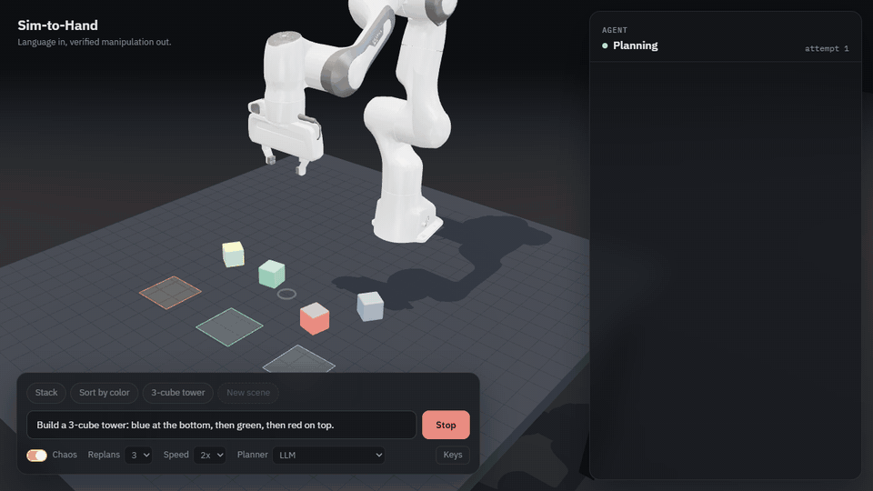

Project 1 · live app
Sim-to-Hand
Type a tabletop task in plain English. An LLM writes a plan from five skills, MuJoCo runs it in your browser with inverse kinematics, the simulator state and a camera-based vision model each verify the result, and the agent replans when it fails. Chaos mode makes grasps slip so you can watch it recover.
24/24benchmark tasks solved without chaos
22/24with injected slips and shoves
69/69vision checks agreed with the simulator
Gemini free tier with Groq fallback · keys behind a rate-limited proxy